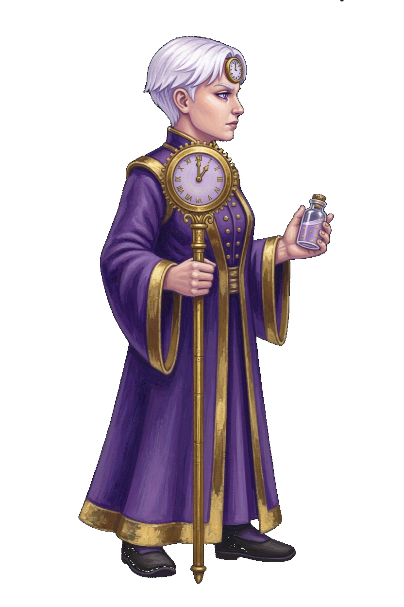
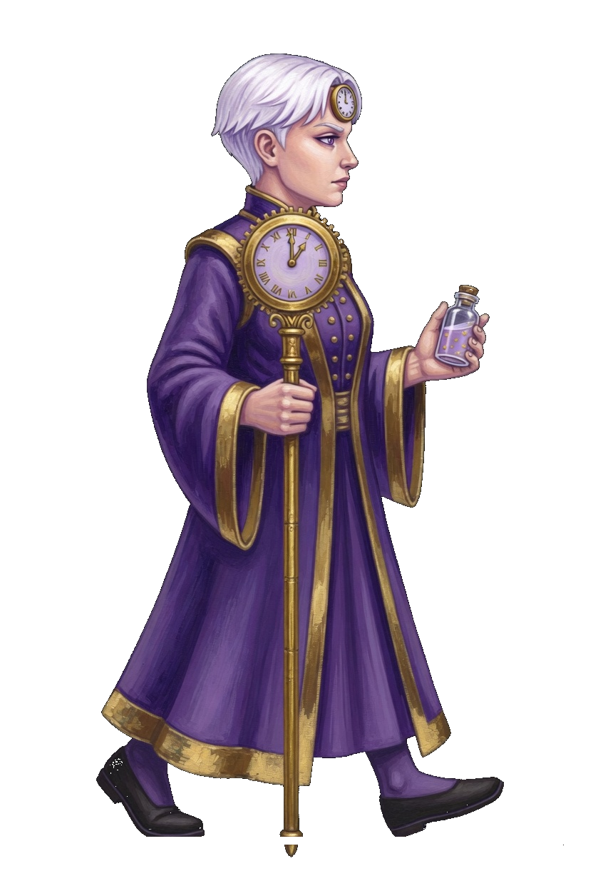
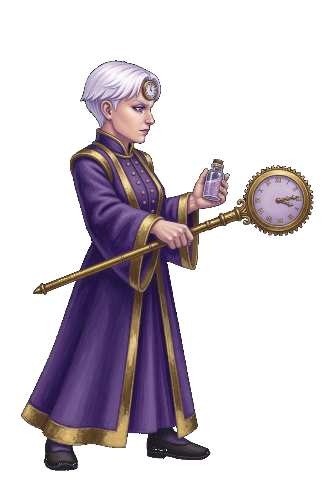
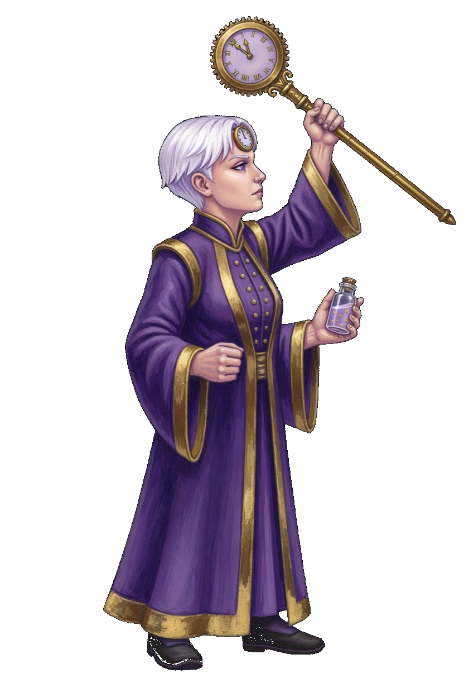
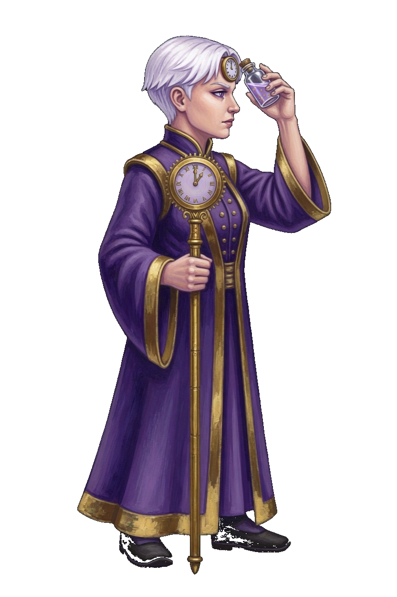
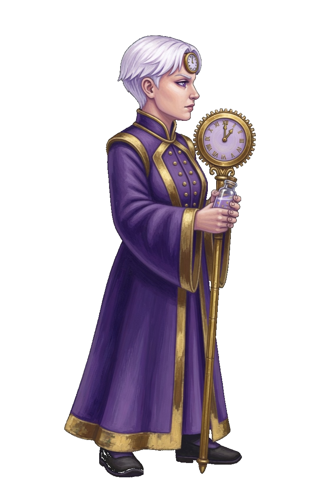
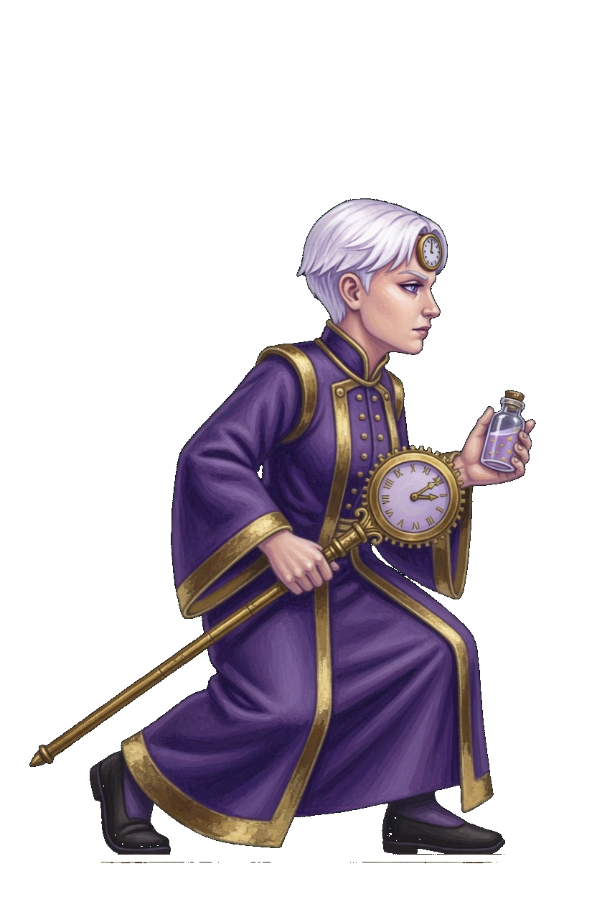
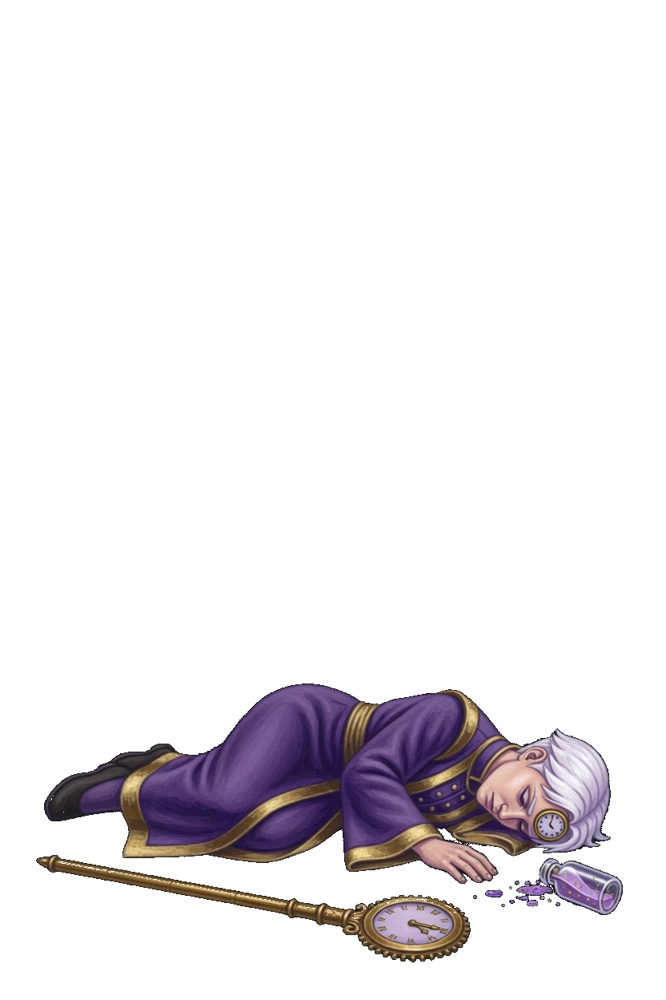
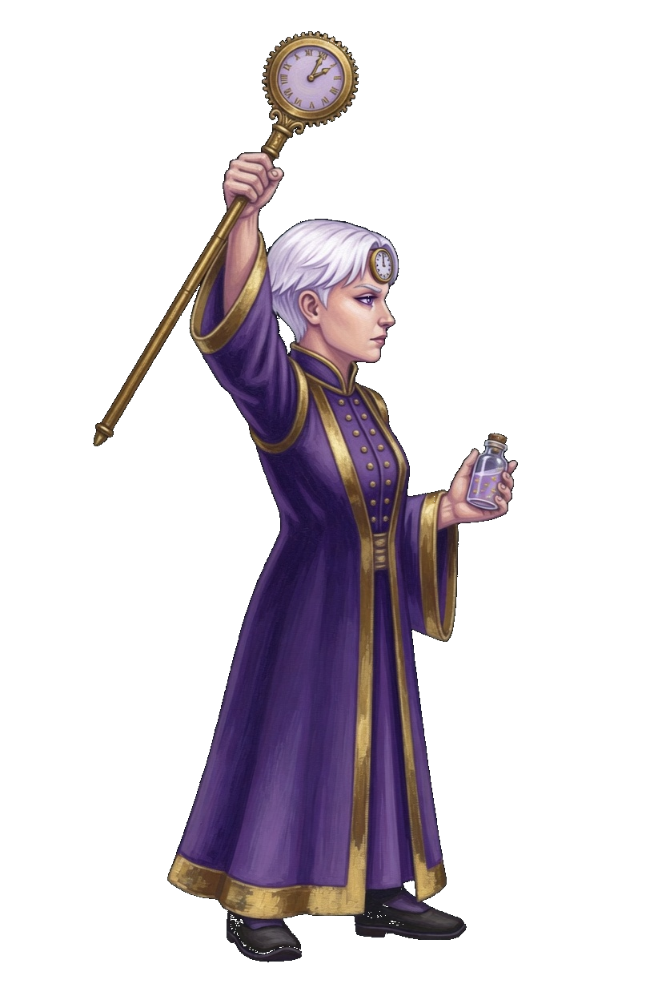

Kairos · Hour Mage
This card is the only pose list. A later frame has to match one of these keys. Native facing is right. The whole sprite flips. White hair, a gold clock on the brow, purple and gold robe, dark shoes, a clock staff, and one glass vial. Kairos is a gun, so the corner step is Slip. He has no move named Dash.
| Book | Value |
|---|---|
| Basic | Hour Bolt · leaves the clock · range 8.4 |
| Body | 600 health · 33 damage · 0.82 attacks/s · speed 3.3 · armor 2 · range 8.4 · mana 155 · regen 13 |
| Crit / cooldown | 0.14 crit · 0.74 cooldown scale |
| Cards | Right-Time Hands · Chorus Charge · Overclock |
| Moves | Right-Time · Borrowed Second · Δ9 Seal |
| Stride | Slip · he is a gun · 30s · cost 8 |
What stays off the body
- Hour Bolt is a halo that leaves the clock. It is not painted in the air in front of the staff.
- Right-Time slows the clump. The ring is not painted on the robe.
- Borrowed Second resets cooldowns. The clock ring is the effect.
- Δ9 Seal keeps that book name. The seal ring is not a glow painted onto the body. This is the same move Lightfather carries, drawn on Kairos's own pose.
Keys

Staff upright, vial in the other hand, both shoes planted. This frame opens Hour Bolt, Right-Time, Borrowed Second, and Δ9 Seal.

One stride. The right shoe leads. The staff and the vial stay in the hands. The fight clip is idle, then this stride. An opposite contact is not on this card.

The staff reaches forward and the clock points ahead. The vial stays in the other hand. Frame 1 and frame 3 are idle.

The staff is lifted and the clock is above the head. The vial stays in the other hand. Frame 1 is idle.

The vial is raised beside the face. The staff stays upright in the other hand. Frame 1 is idle.

Both hands hold the staff upright, and the vial is tucked with them. Frame 1 is idle. The book name stays Δ9 Seal.

The corner step. Low, staff tipped forward, vial still held. Frame 2 is idle. There is no Close key and no Dash key.

Down in the lower part of the canvas. The staff and the vial are with the body. The clip holds this frame. The body is not scaled back up to standing height.

The clock staff is raised. The vial stays in the other hand. Both shoes are planted. This is not Right-Time.